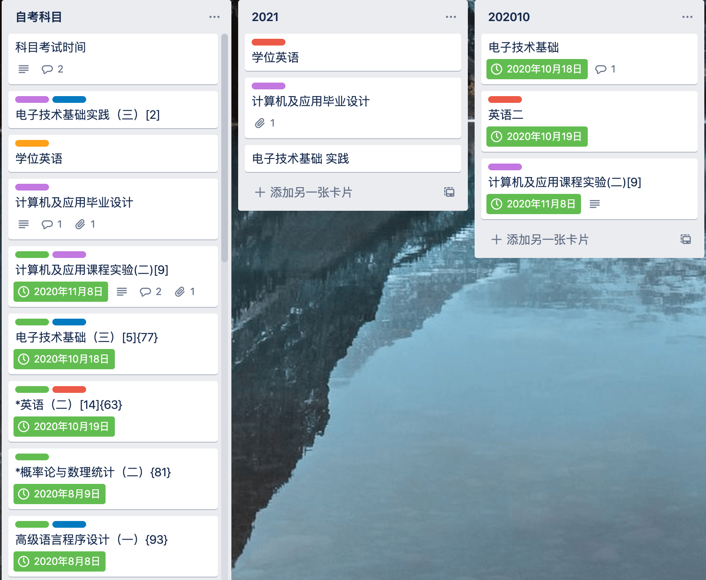
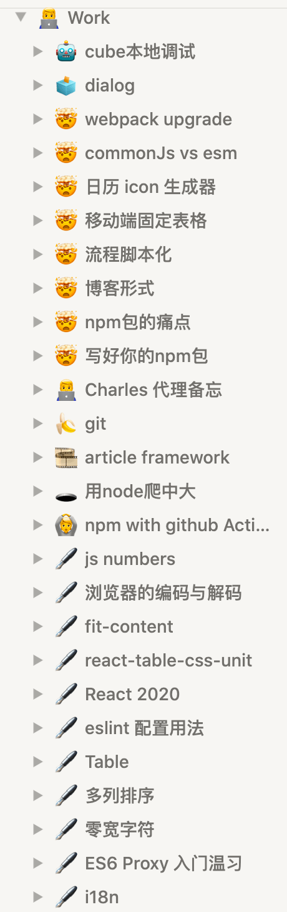
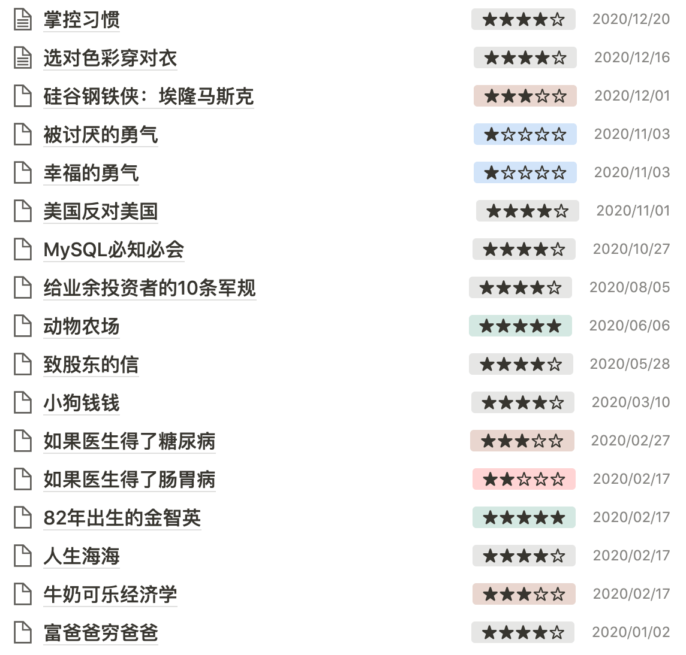
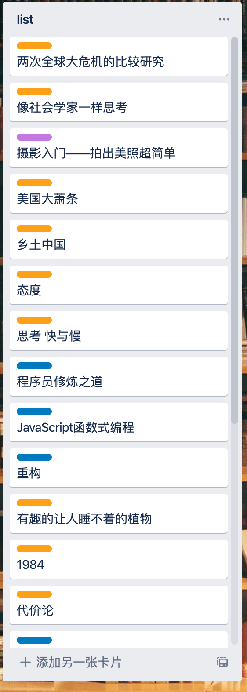

想想还是需要上来写点东西，不然都快忘了有这么一个博客
2020总体评分应该三到四颗星吧~
回顾一下，2019年抱怨述职ppt没什么好写的，今年好像也是，不过已经有了一点好的迹象，至少有了一锅石头汤，剩下的就是往里面加。
自考 ⭐️⭐️⭐️⭐️⭐️
20年的第一个标签就是自考，今年自考也开始进入尾声。20年把所有的理论课都过了，电子技术基础，英语（二） ，高级程序设计，概率论与数理统计还有计算机应用的实践。
总体还是不错，从19年开始好像报考都能过，现在好像没了早上七点起来学习的习惯。
最开心的一点是 英语（二） 过了，现在就剩下 电子技术基础实践，学位英语和论文了。
但是时间点就很尴尬了，实践抱抱佛脚两周肯定没问题，但是一般五月份考，知道成绩估计都得七月份了
论文四月交终稿，如果自考的论文都是比较水的话，那这个没有特别担心，最担心的还是学位英语，如果上半年考不过又得拖时间。
按照最理想的来算，五月份实践考完，论文搞定，学位英语过了，也得下半年才能毕业，有一点出入的话还得拖到21年…
一直在补年轻的债啊

工作 ⭐️⭐️
今年工作还是很一般，基本没长进，虽然有好的点，但是还是不及格.
舔着脸找老大说要提工资也没有通过（boss不给，说职级的薪资就这么多，要么提高职级要么拉倒）。
问了一圈，基本上同事都没有涨工资心里多少平衡一丁点，不过我也不没有抱很大希望。
比起19年的话，可能有两个小点，一个是又开始记录一些工作上的总结，但是这远远不够，想要更多的是一些工作上的思考更深层次的东西，而不是一些 使用心得 。这一方面霜爷确实是楷模。另一方面是开始有了一些小小的沉淀，如果你什么都做不好的，那就从一件事情开始入手。
也渐渐明白了切图、增删查改不是技术没有长进的接口
举个例子,有一个需求是要做合同模版的
- 做几套模版，留出一个插槽填值
- 用组件去拼接这些模版
- 写一个DSL，让产品自己去拼接这些逻辑
所以这明显就是个人对技术和需求的追求….上面的DSL就霜爷做需求的时候想到再反向和产品提的建议

身体 ⭐️⭐️
身体和19年没什么大的变化，主要还是没有形成一个锻炼的习惯，后面讲到习惯的时候再补充。 不及格
阅读 ⭐️⭐️⭐️⭐️
得益于今年年初疫情在家的原因，定的十二本书目标完成~

如果按照罗老师的说法，今年读的书分类也还好，没有太过功利性。这里的罗老师不是老罗…
推一手罗老师的视频我们为什么要读书
这里的我认为的功利性指的是适用性技能和工作上的技术书，而不是鸡汤成功学（泛指卡耐基为代表的的鸡汤）。
视频里面有一句话说的很好“只有非功利的读书才能抵制成功主义的读书”，但是在深圳这种地方真的很难静下心来读书，至少现在还没有很多这种情境。
印象中读闲书（我喜欢把非功利性的书称为闲书）的时间基本都是发生在考试过后的一两个月，这时候放松下来读闲书是最快乐的。真的就有五柳先生的那种心境 _好读书,不求甚解;每有会意,便欣然忘食_。
今年读书的一个好一点点的习惯就是开始有了简单的记录，虽然大部分记录都是功能性书的总结，但是总归有个好的开始，还是得鼓励一下。
20201年想读的书没有一个强制性的书单，都是偶尔在哪里看到一本书想读的就记录下来，后面有空了就去翻翻。再不济就去书店逛一圈，读读畅销书，不过最近感兴趣的分类大概分布在 社会学，历史，传记，哲学和一些经典文学。
这里感谢《美国vs美国》打开了我对社会学的兴趣，不过翻了一圈中国好像很少有这种类型的书，毕竟这种题材比较敏感，能找到的相对类似的也是在几十年前的《乡土中国》。

其他
自闭
今年好像更自闭了，和大学相比，少了很多自信和锋芒，多了几份自卑。也开始不愿走出房门，这里说的不是家门是宿舍房门。不愿与人沟通，程序员的内敛逐渐显现，感觉一大部分的原因是因为目前工作和生活和预期的有落差，导致自卑不愿与人交流，当然工作上还是没什么问题主要指的是生活的扩展。
好在最近又开始注重形象了（像个正常的人）。接下来就是多参加一些活动还有扩展自己的兴趣。
习惯
咦，按照《程序员修炼之道》和《掌控习惯》，想着2021年的话，每个月取一个小主题，一个季度一个大主题。因为如果目标和重心太分散的话，真的很难有什么成果。
每个月培养三个小习惯，开始把以前的习惯捡起来，比如上下班地铁十分钟可以背背单词；晚上散步、跑步、运动半个小时；作息早睡早起七点起床十一点半上床等等。
每个月读一本非技术书（功能性或闲书），每两个月读一本技术书。
程序员修炼之道里面写的是一个月一本技术书，但是我想着上半年我可能精力还是在准备论文和考试，没那么多精力投入，下半年再看要不要调整吧。
每年学一门语言，这里指的是技术向，所以今年的ts算吗？
每月一个新的技术点尝试，比如git终端的使用，不一定说全要用terminal，但是大部分的命令还是练练，熟能生巧
每年坚持一个爱好发展为技能，每两周一个爱好实践